| Group | Units that receive exposure (A=1) | Units that recieve no exposure (A=0) |
|---|---|---|
| Y(1) | Observable | Counterfactual |
| Y(0) | Counterfactual | Observable |
Better causal diagrammes (DAGS) for counterfactual data science
Abstract
Introduction
Correlation is not causation. However, across many human sciences, persistent confusion in the analysis and reporting of correlations has limited scientific progress. The correlations in observed data are frequently biased indicators of causality. This problem is widely known. Nevertheless, many researchers report correlations using hedging language that may suggest causation. Making matters worse, widely adopted strategies for confounding control fail. The reasons these strategies fail are less well understood. The ubiquity of the problem suggests a “causality crisis” (Bulbulia 2022). The magnitude of the causality crisis is at least as great as that of the replication crisis. Addressing the causality crisis is among the human science’s most pressing issues. The challenge is to clarify its basis, and to develop appropriate strategies for response.
When integrated into methodologically rigorous workflows, causal diagrammes or causal directed acyclic graphs – causal “DAGs” – may be powerful tools for identifying causation.1 Causal diagrammes are especially powerful tools for identifying appropriate strategies of confounding control. A system of formal mathematical proofs underpins their design. This brings confidence. However, no formal mathematical training is required to use them. Causal diagrammes are accessible. Their simplicity enchances their accessibility, augmenting their power.
Causal diagrammes offer hope. However the qualities that bring hope – mathematical certainty and technical simplicity – risk harm. All of causal inference relies on assumptions. Causal diagrammes are methods for encoding such assumptions. Using DAGs to encode unwarrented assumptions is arguably worse than using hedging causal language to describe biased correlations. DAGs may suggest entitlement to confident causal assertions where doubt is warrented. For example, when researchers lack time-series data, they cannot generally estimate unbiased causal effects (T. VanderWeele 2015). Cross-sectional researchers who use DAGs to report the unrealistic assumptions hide behind DAGs. Ideall,y causal diagrammes would be equipped with safety mechanisms that prevent these injuries.
Here, I develop a guide to writing causal diagrammes that is grounding in temporally ordered representations the causal paths that a researcher assumes. I recommend what might be called chronologically conscientious causal DAGs. I explain why attention to temporal order in the spatial organisation of a causal diagramme may greatly assist researchers in avoiding the pitfalls. Although no inferential tool is user-proof, the application of chronologically conscientious DAGs may improve safety – DAGs with airbags.
There are many excellent resources for drawing causal diagrammes (Rohrer 2018; Hernan and Robins 2023; Cinelli, Forney, and Pearl 2022; Barrett 2021; McElreath 2020).2. One may reasonably ask whether another tutorial adds clutter. The approach to drawing causal diagrammes that I present hopes to contributes to previous attempts in five ways.
In Part 1. , I present the counterfactual frameworks that are necessary for conceptualising causality. In my view, the most serious obstacle to causal inference is a failure to understand that it is a form of counterfactual data science. We must do more than measure correlations between events that have been realised. We must simulate how the world would have been had events been different, and we must contrast these simulations. This simulations are credible only when specific data have been collected and only when the data meet the strict demands required for counterfactual datascience. Whereas causal diagrammes help researchers to answer questions, we must first understand how to ask causal questions.
In Part 2, I review the four elemental forms of confounding, and use chronological causal diagrammes to elucidate their properties. Although this discussion replicates material from other tutorials, by emphasising the benefits of temporal order in spatial organisation of the graph the conditions in which we may identify causality in the presence of confounding become more apparent. Here, I also show how causal graphs may clarify poorly understood concepts of interaction, mediation, and repeated measures longitudinal data. Causal diagrammes will help us to understand why the commonplace modelling approaches such as multilevel modelling and structural equation modelling are poorly suited to the demands of counterfactual datascience.
In Part 3, I explain how chronological causal diagrammes reveal strategies for data-collection in three-wave panel designs. Here, applied researchers will understand how they may collect data suited to their purposes.
In Part 4, I focus on the problem of selection bias as it arises in a three-wave panel, using causal graphs to focus our minds on the mission-critical imperatives for (a) adequate sampling and (b) longitudinal retention. It has been said there is nothing like the gallows to focus the mind. Selection bias is the gallows.
In Part 5, I focus on the problem of measurement error as it arises in a three-wave panel, using causal graphs to focus on the mission-critical imperatives for (a) ensuring good measures, (b) assessing pathways for confounding from correlated and directed measurement errors (c) performing sensitivity analyses.
I conclude with by reviewing advice and summarising best-practices. Technical details are presented in an Appendix.
Part 1. The three fundamental identifiability assumption for counterfactual datascience (aka “causal inference”)
Causal diagrammes are powerful tools for answering causal questions. However before we can answer a causal question, we must first understand what is involved when we ask a causal question. In this section I review key concepts and identification assumptions.
The fundamental problem of causal inference
We say that \(A\) causes \(Y\) if changing \(A\) would have made a difference to the outcome of \(Y\). The use of the subjective “would have” reveals the need for counterfactuals when conceiving of causal effects. To infere a causal effect requires counterfactual data-science.
Suppose there is evidence that cultures believing in Big Gods demonstrate greater social complexity. We are interested in estimating the causal effect of belief in Big Gods on social complexity. Here, the belief in Big Gods is the “exposure” or “treatment” of interest.
We define two counterfactual (or “potential”) outcomes for each culture in a population:
- \(Y_i(a = 1)\): The social complexity of culture \(i\) if they believed in Big Gods. This is the counterfactual outcome when \(A_i = 1\).
- \(Y_i(a = 0)\): The social complexity of culture \(i\) if they did not believe in Big Gods. This is the counterfactual outcome when \(A_i = 0\).
Within a counterfactual framework, the causal effect of belief in Big Gods on social complexity for culture \(i\) may be defined as a contrast, on the difference scale, between two potential outcomes (\(Y_i(a)\)) under the two different levels of the exposure (\(A_i = 1\) (belief in Big Gods); \(A_i = 0\) (no belief in Big Gods)). For simplicity we assume these exposures are exhaustive, and well-defined. Under these assumptions:
\[ \text{Causal Effect of Belief in Big Gods}_i = Y_i(1) - Y_i(0) \]
We require a contrast between two states of the world only one of which the culture might actually receive 3. When the culture receives one level of the belief in Big Gods the outcome under the other level(s) is ruled out by the natural order. The same holds for groups of cultures who are exposed or unexposed. This is called “the fundamental problem of causal inference” (Rubin 1976; Holland 1986). As shown in Table 1, at least half the counterfactual outcomes we require for estimating individual causal effects are missing. For this reason, causal inference has been described as a missing data problem (Westreich et al. 2015; Edwards, Cole, and Westreich 2015).
Table 1 expresses the relationship between observable and counterfactual outcomes as a contingency table (This table is modified from a table in (Morgan and Winship 2014)).
Average causal effects
Although we cannot generally observe unit-level causal effects, it may be possible to estimate average causal effects. We do this by contrasting the average effect in the exposed group with the average effect in the unexposed unexposed group. For example, average of the contrast (or equivalently the contrast of the the averages)4 on the difference scale may be expressed:
\[\begin{alignat*}{2} ATE & = E[Y(1)) - E(Y(0)]\\ & = E=[Y(1) - Y(0)] \end{alignat*}\]The average treatment effects that we are interested in estimating need not be the effects of binary exposures. We may obtain contrasts between two different levels of a multinomial or continuous exposure. If we define the levels we wish to contrast as \(A = a\) and \(A = a*\). Then the average treatment effect is given by the expression:
The three fundamental identification conditions for causal inference, when they obtain, allow researchers to recover the counterfactual contrasts necessary to compute causal effects from observed data. Not only does causal estimation rely on assumptions about the causal relationships that researchers hope to estimate, the data are generally insufficient to fully assess the fundamental identifibility assumptions on which causal estimation relies.
Although this tutorial does not cover methods of estimation, it is crucial to notice that causal inference requires something more than data science. Causal inference would be better described as counterfactual data science. This is because we estimate causal effects using simulated or counterfactual states of the world in which everyone in a population received the treatment-level of the exposure contrasted with simulated or counterfactual states of the world in which everyone in the same population recieved the contrast or control level of the exposure. As mentioned, individual causal effects cannot be generally identified from the data. However, when the three fundamental identification conditions have been satisfied may we link counterfactual outcomes to observed data to simulate counterfactual causal contrasts for the population of interest, or the “target population.” To repeat these contrasts required for causal inference are between hypothetical states of the world. For this reason, we say that causal inference is counterfactual data-science.
Identification assumption 1: Causal consistency
We satisfy the causal consistency assumption when the potential or counterfactual outcome under exposure \(Y(A=a)\) corresponds to the observed outcome \(Y^{observed}|A=a\).
Where the assumption of causal consistency is tenable, we say that the missing counterfactual outcomes under hypothetical exposures are equal to the observed outcomes under realised exposures. That is, by substituting \(Y_{observed}|A\) for \(Y(a)\) we may recover counterfactual outcomes required for our causal contrasts from realised outcomes under different levels of exposures. Notice that the causal consistency assumption reveals the priority of counterfactual outcomes over actual outcomes. It is the causal consistency assumption that allows us to obtain counterfactual outcomes from data (including experimetnal data).
We obtain the counterfactual outcomes by setting the observed outcomes to the counterfactual outcomes:
\[ Y^{observed}_i = \begin{cases} Y_i(~a^*) & \text{if } A_i = a* \\ Y_i(~a~) & \text{if } A_i = a \end{cases} \]
Under which conditions may we set the observed outcomes of an exposure to the counterfactual outcomes under that exposure?
First we must assume no interference, such that for any units \(i\) and \(j\), \(i \neq j\), that receive treatment assignments \(a_i\) and \(a_j\), the potential outcome for unit \(i\) under treatment \(a_i\) is not affected by the treatment assignment to unit \(j\), thus:
\[Y_i(a_i, a_j) = Y_i(a_i, a'_j)\]
for all \(a_j, a'_j\).
Put differently, causal consistency requires that the potential outcome for unit \(i\) when it receives treatment \(a_i\) and unit \(j\) receives treatment \(a_j\) is the same as the potential outcome for unit \(i\) when it receives treatment \(a_i\) and unit \(j\) receives any other treatment \(a'_j\). Thus, the treatment assignment to any other unit \(j\) does not affect the potential outcome of unit \(i\). Where there are dependencies in the data, such as in social networks, where potential outcomes differ depending on the treatment assignments of others causal consistency will typically be violated.
We might assume that in any study, and especially in observational studies, there are differences between versions of treatment \(A\) that individuals receive. Given such differences, how might we ever substitute observed treatments with counterfactual treatments?
A more general formulation of the no-interference assumption is the assumption of “treatment variation irrelevance” (Tyler J. VanderWeele 2009), which has been developed into the theory of causal inference under multiple versions of treatment. According to this theory, where there are \(K\) versions of treatment \(A\), if each element of \(K\) is sufficiently well-defined to correspond to well-defined outcome \(Y(k)\), and if there is no confounding for the effect of \(K\) on \(Y\) given measured confounders \(L\), then we may use \(A\) to as a coarsened indicator to consistently estimate the causal effect of the multiple versions of treatment\(K\) on \(Y(k)\). We write \(Y(k)\) is independent of \(K\) conditional on \(L\) (Tyler J. VanderWeele 2009, 2018; Tyler J. VanderWeele and Hernan 2013) as:
\[K \coprod Y(k) | L\] or equivalently
\[Y(k) \coprod K | L\]
Given this independence, \(A\) denotes a function over multiple interventions: \(A = f(k_1\dots K)\) and we may obtain causally consistent estimates for \(A\). The prome
Unfortunately, where interventions are ill-defined we may not be able to assess the conditional independence assumption. Moreover, even if we may assume conditional independence holds for all versions of treatment, we might be at a loss to understand the causal effect we have estimated. For example, consider the effect of weight-loss at age 40 on all cause mortality at age 50, noting there are potentially many way in which people lose weight, including exercise, caloric restriction, liposuction, stomach stapling, smoking, cancer, and famine. To estimate “the causal effect of weight-loss” without specifying the intervention in question leaves it unclear precisely which effects we are consistently estimating much less whether such effects transport to populations in which the distribution of \(k \in K\) interventions differs. For example, if the distribution of unhealthy interventions exceeds the distribution of health interventions, we might erroneously infer that all weight loss is unhealthy. Given the variability in measured observational data, human scientists must appreciate the limitations of validating and interpreting their results. (We will return to this mission critical realisation in Part 2.)
Finally, note that although causal consistency assumption allow us to link observed outcomes with counterfactual outcomes, half of the observations that we require to obtain causal contrasts remain missing. Consider an experiment in which assignment to a binary treatment \(A = {0,1}\) is random. We observe the realised outcomes \(Y^{observed}|A = 1\) and \(Y^{observed}|A = 0\), By causal consistency, \((Y^{observed}|A = 1) = Y(1)\) and \((Y^{observed}|A = 0) = Y(0)\). Nevertheless, the counterfactual outcomes for the treatments that participants did not receive are missing.
\[ ATE = \bigg(\underbrace{E[Y(1)|A = 1]}_\text{observed} + \underbrace{E[Y(1)|A = 0]}_\text{unobserved}\bigg) - \bigg(\underbrace{E[Y(0)|A = 0]}_\text{observed} + \underbrace{E[Y(0)|A = 1]}_\text{unobserved}\bigg) \] We next turn to the exchangability assumption, which when satisifed allows us to impute those missing counterfactuals required for estimating causal effects.
We will next consider how the exchangability assumption allows us to recover the missing counterfactual outcomes.
Identification assumption 2: Exchangability
When we assume exchangability, we assume that the treatment assignment is independent of the potential outcomes, given a set of observed covariates. Or equivalently, when we assume exchangability conditional on observed covariates, we assume the treatment assignment mechanism does not depend on the unobserved potential outcomes. This condition is one of “exchangeability” because conceptually, were we to “exchange” or “swap” individuals between the exposure and contrast conditions the distribution of potential outcomes would remain the same. Put differently, we say there is balance between the treatment conditions in the confounders that might affect the outcome. Where \(L\) is a measured covariate, exchangability may be expressed:
\[Y(a)\coprod A|L\]
or equivalently:
\[A \coprod Y(a)|L\]
Where such exchangability conditional on measured covariates holds, then:
\[ \begin{aligned} ATE = E[Y(a*)|L = l] - E[Y(a)|L = l] \end{aligned} \]
Again, conditioning on variables that might lead to an association between the exposure and outcomes in the absense of a causal association ensures balance in the distribution of such confounders across the exposures. Although causal diagrammes or DAGs may be used to assess causal consistency and positivity, their primary use is to clarify the conditions under which we may consistently estimate causal effects by conditioning on (or omitting) covariates.
Identification assumption 3: Positivity
The positivity assumption is satisfied if there is a positive probability of receiving the exposure or non-receiving the exposure within every level of the the covariates. The probability of receiving every value of the exposure within all strata of co-variates is greater than zero may be expressed:
\[\begin{equation} 0 < \Pr(A=a|L)<1, ~ \forall a \in A, ~ \forall a \in L \end{equation}\]This assumption is crucial for causal inference because we cannot conceive of causal contrasts in the absence of interventions. There are two types of positivity violations:
Random non-positivity: the casual effect of ageing with observations missing within our data, but may be assumed to exist. For example every continuous exposure will lack (infinitely many) realisations on the number line, yet we may nevertheless use statistical models to estimate causal contrasts. This assumption is the only identifiability assumption that can be verified by data. Although our task here is not to guide researchers on how to model their data, we note that it is important for applied researchers to verify and report whether random non-positivity is violated in their data.
Deterministic non-positivity: the causal effect is inconceivable. For example, the causal effect of hysterectomy in biological males violates deterministic non-positivity.
Relevance to cultural evolution
Recall that causal estimation is grounded in counterfactual data science. Our ability to derive meaningful causal contrasts from the data hinges on meeting three fundamental identification assumptions: causal consistency, exchangeability, and positivity. Given the inherently complex and multifaceted nature of history, it is a formidable a challenge to satisfy these prerequisites.
Consider the Protestant Reformation. Martin Luther’s reformation in the 16th century led to the establishment of Protestantism. Many have argued that Protestantism caused social, cultural, and economic changes in those societies where it took hold. Suppose we are interested in estimating the Average Treatment Effect (ATE) of this religious change (Protestantism, represented as \(a*\)) compared to the counterfactual of remaining Catholic (\(a\)). For the purposes of this example we will assume that a well-defined social outcome, economic development as measured by GDP +1 century after a country becomes predominantly Prosetant (compared with remaining Catholic) (\(Y(a)\)):
\[ATE_{\mathtt{economic~development}} = E[Y(\mathtt{Became~Protestant}) - Y(\mathtt{Remained~Catholic})]\]
Consider the three fundamental identification assumptions.
Causal Consistency: As a historical event, the Reformation happened in different ways and to varying degrees across European societies. We must assume that “treatment” (\(a*\) or \(a\)) is well-defined and consistent across these differences circumstances. Yet consider how variable these “treatments” were in the case of Reformation Europe. In England, for example, the establishment of Protestantism was closely tied to the royal crown. King Henry VIII instigated the English Reformation primarily to establish himself as the head of the Church of England, separate from the papal authority of the Catholic Church.
Consider Germany, the birthplace of the Protestant Reformation. Martin Luther’s teachings emphasized individual faith and the interpretation of scriptures, spurring a degree of educational fervour that led to increased literacy rates, even among the lower classes. This emphasis on education is believed to have sparked economic development by creating a more skilled and literate workforce. There is certainly ample scope for variation in treatments. Even if the theory of causal inference under multiple versions may be applied, it is unclear what we mean by the causal effect of Protestantism.
There is also ample scope for interference: societies in the 16th century were not isolated; instead, they were deeply intertwined through complex networks of trade, diplomacy, and warfare, which were variously effected by religious alliances. The religious choices of one society are not independent of the economic development of others. For example, consider the relationship between Spain and the Netherlands in the 16th and 17th centuries. Protestantism in the Netherlands sowed the seeds for its Eighty Years’ War against Catholic Spain. This war drained Spain’s wealth and led to economic decline, while the Netherlands, benefiting from the innovation and economic liberties that accompanied their version of Protestantism, became one of the most prosperous nations in Europe. Treatment effects are not clearly independent of each other.
Exchangeability Here, we assume that potential confounders may be balanced in the two conditions. For instance, political stability, which includes factors such as the consistency of leadership, social order, and the rule of law, can have profound effects both on a society’s receptiveness to religious change and its economic development. However, as mentioned in the previous section, it is not clear how we can disentangle political stability from the intervention itself. When estimating causal effects, not only we would need much greater clarity in our definition of the exposure and outcome, but also in the operationalisation and measurement of the confounders we will use for confounding control. Political stability in England under Henry VIII arguably differed both qualitatively and quantitatively with the stability of Sweden and Spain. It is unclear whether cultures could be considered exchangeable by such different measure of political stability. This is not to claim that we can never balance culture using measured covariates such as stability, but only to underscore the conceptual challenges in doing so. These challenges arise in data rich settings, a point we will consider in Part 4.
Positivity: The positivity assumption requires that every unit at ever level of the measured confounders has a non-zero probability of receiving both treatment. The units in our example are European cultures that may adopt Protestantism or remain Catholic within some bounded period of time. However, historical context arguably creates deterministic patterns that challenge this assumption 5. However it is not clear that Spain could have been randomly assigned to Protestantism, compromising estimation of for an Average Treatement Effect. It would seem here that estimating the average treatement effect in the treated make more conceptual sense:
\[ATT = E[(Y(a*)- Y(a))|A = a*, L]\]
Here, the ATT is the expected difference in economic success in the cultures that became Protestant contrasted with their expected economic success had those cultures not become Protestant, conditional on measured confounders. However, to estimate this causal contrast we would need to match Protestant cultures with comparable non-protestant cultures. It would be for historians to consider whether matching is conceptually plausible. There are deeper questions about whether we can conceptualise cultures as random realisations of a draw from possible cultures.
Setting these deeper conceptual questions to the side, it should be apparent that there are considerable difficulties in assumming that the three fundamental assumption required for causal questions are easily addressed in this example. Again, causal inference is counterfactual data science. The assumptions required for counterfactual data science are significant. Let us set these worries to the side. Suppose we are ready to address causal questions with data. We next review how causal diagrammes may help researchers to diagnose – and avoid – the four elemental types of confounding. Here, we shall discover how adding chronological structure to our graphs assists researchers in developing strategies for confounding control, thereby addressing the exchangeability assumption.
Part 2. Chronological causal DAGs
Elements of causal DAGs:
Nodes: These symbolize variables within a causal system. We denote nodes with letters such as
\[ A, ~ Y \]
Edges or Vertices: These are arrows connecting nodes, signifying causal relationships. We denote edges with arrows:
\[ A \to Y \]
Variable Naming Conventions
Outcome: typically denoted by \(Y\). The effect or outcome of interest. Do not attempt to draw a causal DAG unless this outcome is clearly defined. Exposure or Treatment: typically denoted by \(A\) or \(X\). The intervention. Do not attempt to draw a causal DAG unless the exposure is a clearly defined and does not violate deterministic non-positivity. Confounders: typically denoted by \(C\) or \(L\). Informally the variables influencing both the exposure/treatment and the outcome. Or more formally: Unmeasured Confounders: typically denoted by \(U\): Selection Variables: typically denoted by \(U\): Variables affecting a unit’s inclusion in the study (including retention in the study). Box: denotes conditioning on a variable. For example, to denote selection into the study we write
\[\framebox{S}\]
To denote conditioning on a confounder set \(L\) we write
\[\framebox{L}\]
Key Concepts
- Markov Factorisation: Pertains to a causal DAG in which the joint distribution of all nodes can be expressed as a product of conditional distributions. Each variable is conditionally independent of its non-descendants, given its parents. This is crucial for identifying conditional independencies within the graph.
- D-separation (direction separation): Pertains to a condition in which there is no path between some sets of variables in the graph, given the conditioned variables. Establishing d-separation allows us to infer conditional independencies, which in turn help identify the set of measured variables we need to adjust for to obtain an unbiased estimate of the causal effect, or in the presence of unmeasured or partially measured confounders, to reduce bias.
Assumption of causal diagrammes
Causal Markov Condition
The Causal Markov Condition is an assumption that each variable is independent of its non-descendants, given its parents in the graph. In other words, it assumes that all dependencies between variables are mediated by direct causal relationships. If two variables are correlated, it must be because one causes the other, or they have a shared cause, not because of any unmeasured confounding variables.
Formally, for each variable \(X\) in the graph, \(X\) is independent of its non-descendants NonDesc(\(X\)), given its parents Pa(\(X\)).
This is strong assumption. Typically we must assume that there are hidden, unmeasured confounders that introduce dependencies between variables, which are not depicted in the graph. **It is important to (1) identify known unmeasured confounders and (2) label them on the the causal diagramme.
Faithfulness
The Faithfulness assumption is the inverse to the Causal Markov Condition. It states that if two variables are uncorrelated, it is because there is no direct or indirect causal path between them, not because of any cancelling out of effects. Essentially, it assumes that the relationships in your data are stable and consistent, and will not change if you intervene to change some of the variables.
Formally, if \(A\) and \(Y\) are independent given a set of variables \(L\), then there does not exist a set of edges between \(A\) and \(Y\) that remains after conditioning on \(L\).
As with the Causal Markov Condition, Faithfulness is a strong assumption, and it might not typically hold in the real world. There could be complex causal structures or interactions that lead to apparent independence between variables, even though they are causally related.
General Advice for drawing a causal DAG
- Define all variables clearly.
- Define any novel conventions you employ. This could include dotted or coloured arrows to indicate confounding that is induced, or unaddressed (as below)
- Adopt minimalism. Include only those nodes and edges that are needed to clarify the problem. Use diagrams only when they bring more clarity than textual descriptions alone.
- Chronological order. Where possible maintain temporal order of the nodes in the spatial order of the graph. Typically from left to right or top to bottom. When depicting repeated measures, index them using time subscripts:
- Add time-stamps to your nodes. To bring additoinal clarity, it is almost always useful to time-stamp the nodes of your graph, for example, in schematic form:
\[ L_{t0} \rightarrow A_{t1} \rightarrow Y_{t2} \]
- Where exposures are not assigned randomly, we should nearly always assume unmeasured confounding. For this reason, your causal DAG should include a description of the sensitivity analyses you will perform to clarify the sensitivity of your findings to unmeasured confounding. Where there are known unmeasured confounders these should be described.
Recall that DAGs are qualitative representations. The stamps need not defined clearly defined units of time. Rather time stamps should preserve chronological order.
Elemental counfounds
There are four elemental confounds (McElreath 2020, 185). Consider how chronological consciensciousness assists with understanding both constraints on data.
1. The problem of confounding by common cause
The problem of confounding by common cause arises when there is a variable denoted by \(L\) that influences both the exposure, denoted by \(A\) and the outcome variable, denoted by \(Y.\) Because \(L\) is a common cause of \(A\) and \(L\) is may create a statistical association between \(A\) and \(Y\) that does not reflect a causal association between \(A\) and \(Y\). Put differently, although intervening on \(A\) might not affect \(Y\), \(A\) and \(Y\) may be associated. For example, people who smoke may have yellow fingers. Smoking causes cancer. Because smoking (\(L\)) is a common cause of yellow fingers (\(A\)) and cancer (\(Y\)), \(A\) and \(Y\) will be associated. However, intervening to change the colour of people’s fingers would not affect cancer. The dashed red arrow in the graph indicate bias arising from the open backdoor path from \(A\) to \(Y\) that results from the common cause \(L\).”
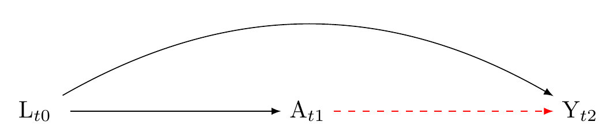
Advice: attend to the temporal order of cauasality
Confounding by a common cause can be addressed by adjusting for it. Typically we adjust through through statistical models such as regression, matching, or inverse probability of treatment weighting. Again, it is beyond the scope of this tutorial to describe causal estimation techniques. Figure Figure 2 clarifies that any confounding that is a cause of \(A\) and \(Y\) will precede \(A\) (and so \(Y\)), because causes precede effects. By indexing the the nodes on the graph, we can see that confounding control typically requires time-series data.
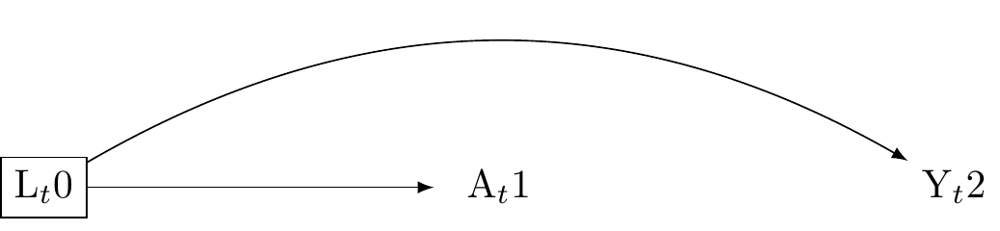
2. Confounding by collider stratification (conditioning on a common effect)
Conditioning on a common effect occurs when a variable \(L\) is affected by both the treatment \(A\) and an outcome \(Y\).
Suppose \(A\) and \(Y\) are initially independent, such that \(A \coprod Y(a)\). Conditioning on the common effect \(L\) opens a backdoor path between \(A\) and \(Y\), possibly inducing an association. This occurs because \(L\) gives information about the relationship of \(A\) and \(Y\). Here’s an example:
Let \(A\) denote “exercise”. Let \(Y\) denote “heart disease”. Let \(L\) denote “weight”. Suppose, “exercise” and “heart disease” are not causally linked. However, they both affect “weight”, and if we condition on “weight” in a cross-sectional study, we might find a statistical association between “exercise” and “heart disease” even in the absence of causation.
We denote the observed associations as follows:
- \(P(A = 1)\): Probability of exercising
- \(P(Y = 1)\): Probability of having heart disease
- \(P(L = 1)\): Probability of being overweight
Without conditioning on \(L\), we have:
\[P(A = 1, Y = 1) = P(A = 1)P(Y = 1)\]
However, if we condition on \(L\) (thecommon effect of both \(A\) and \(Y\)), we find:
\[P(A = 1, Y = 1 | L = 1) \neq P(A = 1 | L = 1)P(Y = 1 | L = 1)\]
The common effect \(L\), once conditioned on, creates a non-causal association between \(A\) and \(Y\). This can mislead us into believing there’s a direct link between exercise and heart disease, which is not the case. In the cross-sectional data, if we only observe \(A\), \(Y\), and \(L\) without understanding their causal relationship, we might erroneously conclude that there is a causal relationship between \(A\) and \(Y\). This is the collider stratification bias.
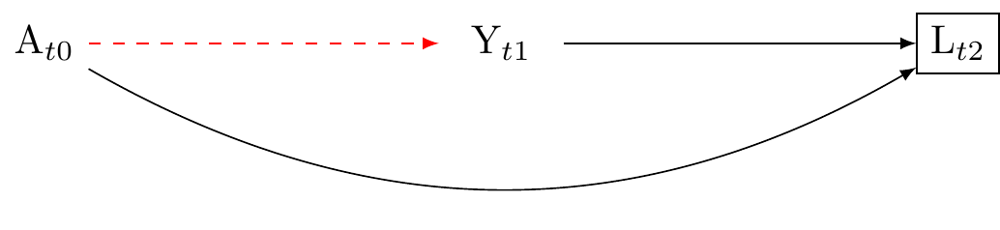
Advice: attend to the temporal order of cauasality
To address the problem of conditioning on a common effect, we should generally ensure that all confounders \(L\) that are common causes of the exposure \(A\) and the outcome \(Y\) are measured before the occurance of the exposure \(A\), and furthermore that the exposure \(A\) is measured before the occurance of the outcome \(Y\). If such temporal order is preserved, \(L\) cannot be an effect of \(A\), and thus neither of \(Y\). By measuring all relevant confounders before the exposure, researchers can minimise the scope for collider confounding by conditioning on a common effect. This rule is not absolute. As indicated in Figure 9, it may be useful in certain circumstances to condition on a confounder that occurs after the outcome has occurred.
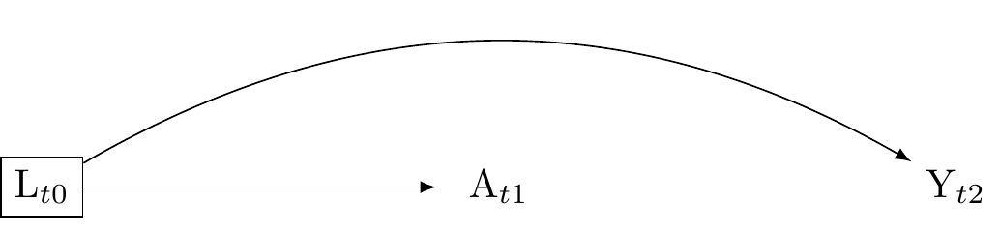
M-bias: conditioning on a collider that occurs before the exposure may introduce bias
Typically, confounders should be measured before their exposures. However, researchers should be cautious about conditioning on pre-exposure variable, as doing so can induce confounding. As shown in Figure 5, collider stratification may arise even if \(L\) occurs before \(A\). This happens when \(L\) does not affect \(A\) or \(Y\), but may be the descendent of a unmeasured variable that affects \(A\) and another unmeasured variable that also affects \(Y\). Conditioning on \(L\) in this scenario elicits what is called “M-bias.” Note, however, that if \(L\) is not a common cause of \(A\) and \(Y\), \(L\) should not be included in our model because it is not a source of confounding. Here, \(A \coprod Y(a)\) and \(A \cancel{\coprod} Y(a)| L\). The solution: do not condition on the pre-exposure variable \(L\).
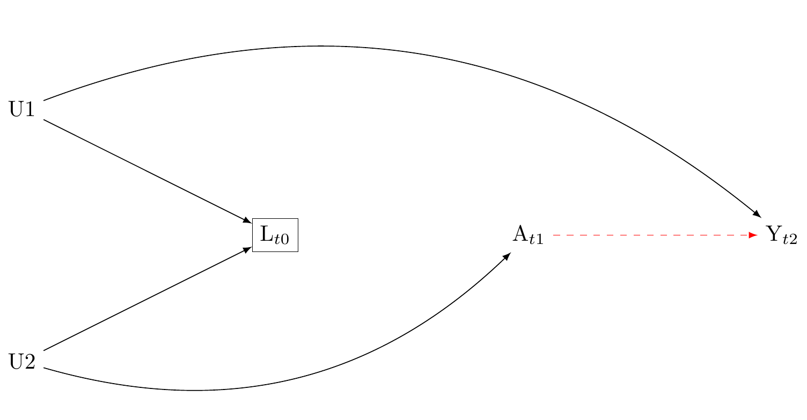
3 The problem of conditioning on a mediator
Conditioning on a mediator occurs when \(L\) lies on the causal pathway between the treatment \(A\) and the outcome \(Y\). Conditioning on \(L\) can lead to biased estimates by blocking or distorting the total effect of \(A\) and \(Y\). Where \(L\) is a mediator, including \(L\) will typically attenuate the effect of \(A\) on \(Y\). This scenario is presented in Figure 6. Where \(L\) is a collider between \(A\) and an unmeasured confouder \(U\), then including \(L\) may increase the strength of association between \(A\) and \(Y\). This scenario is presented in Figure 8.
In either case, unless one is interested in mediation analysis, conditioning on a post-treatment variable is nearly always a bad idea.
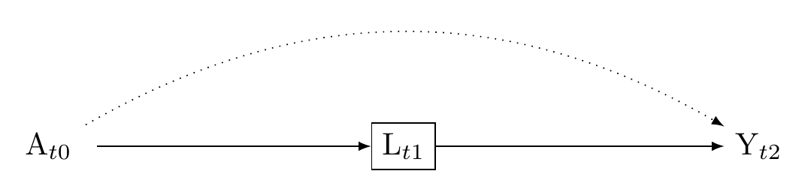
Advice: attend to the temporal order of cauasality
To address the problem of mediator bias, when interested in total effects do not condition on a mediator. This can be done by ensuring that \(L\) occurs before \(A\) (and \(Y\)). Again we discover the importance of an explicit temporal ordering for our variables. Although note, if \(L\) is associated with \(Y\) but is not associated with \(A\) conditioning on \(L\) will improve the efficiency of the causal effect estimate of \(A\) on \(Y\). However, if \(A\) might affect \(L\), then \(L\) might be a mediator, and including \(L\) risks bias. As with some much in causal estimation, we must understand the context.

4. Conditioning on a descendant
Say \(X\) is a cause of \(X\prime\). If we condition on X we partially condition on \(X\prime\).
There are both negative and positive implications for causal estimation in real-world scenarios.
First the negative. Suppose there is a confounder \(L\) that is caused by an unobserved variable \(U\), and is affected by the treatment \(A\). Suppose further that \(U\) causes the outcome \(Y\). In this scenario, as described in Figure 8, conditioning on \(L\), which is a descendant of \(A\) and \(U\), can lead to a spurious association between \(A\) and \(Y\) through the path \(A \to L \to U \to Y\).
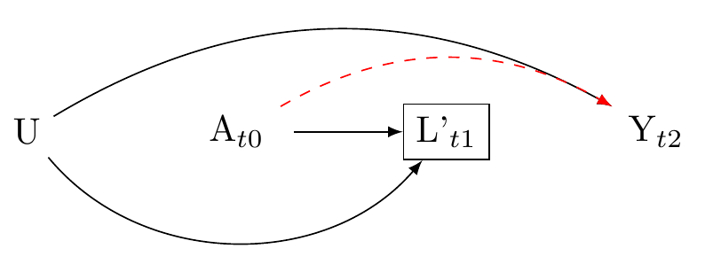
Advice: attend to the temporal order of causality, and use expert knowledge of all relevant nodes.
Ensuring the confounder (\(L\)) is measured before the exposure (\(A\)) has two benefits.
First, if \(L\) is a confounder, that is, if \(L\) is a variable which if we fail to condition on it will bias the association between treatment and outcome, the strategy of including only pre-treatment indicators of \(L\) will reduce bias. Figure 9 presents this strategy
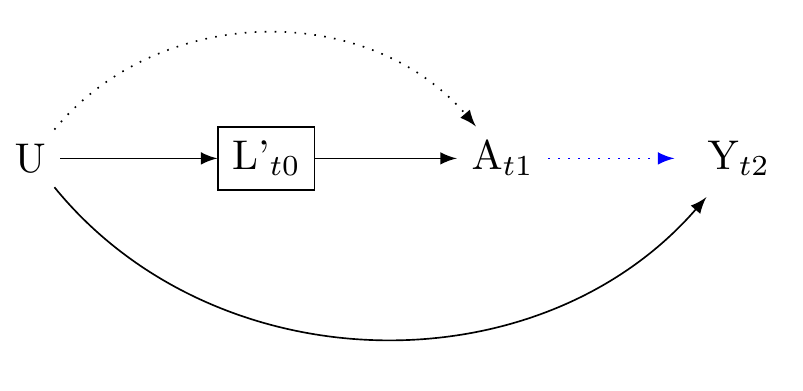
Secondly, note that we may use descendent to reduce bias. For example, if an unmeasured confounder \(U\) affects \(A\), \(Y\), and \(L\prime\), then adjusting for \(L\prime\) may help to reduce confounding caused by \(U\). This scenario is presented in Figure 10. Note that in this graph, \(L\prime\) may occur after the exposure, and indeed after the outcome. This shows that it would be wrong to infer that merely because causes preceed effects, we should only condition on confounders that preceed the exposure.
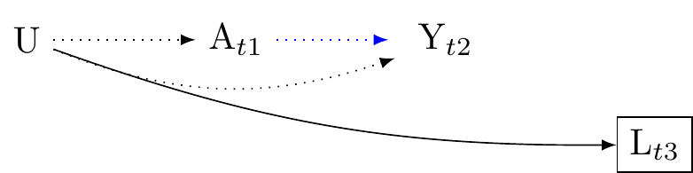
Causal Interaction?
Applied researchers will often be interested in testing interactions. What is causal interaction and how may we represent it on a causal diagramme?
We must distinguish the concept of causal interaction from the concept of effect modification.
Causal interaction as two independent exposures
Causal interaction is the effect of two exosures that may occur jointly or separately (or not occur). We say there is interaction on the scale of interest when the effect of one exposure on an outcome depends on the level of another exposure. For example, the effect of a drug (exposure A) on recovery time from a disease (outcome Y) might depend on whether or not the patient is also receiving physical therapy (exposure B). In terms of causal quantities, if we denote the potential outcomes under different exposure combinations as \(Y(a,b)\), a causal interaction on the difference scale would be present if \(Y(1,1) - Y(1,0) \neq Y(0,1) - Y(0,0)\).
When drawing a causal diagram, we represent the two exposures as separate nodes and draw edges from them to the outcome, as showin in Figure 11. This is because causal diagrams are non-parametric; they represent the qualitative aspects of causal relationships without making specific assumptions about the functional form of these relationships.
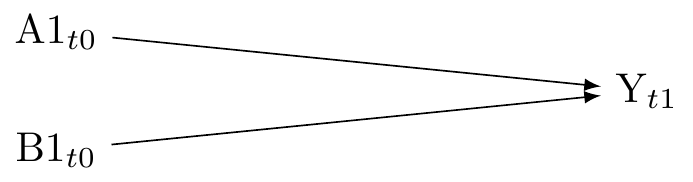
Effect measures for causal interaction
On the difference scale, the total causal effect of an exposure \(A\) on an outcome \(Y\) is typically quantified as \(Y(1) - Y(0)\), where \(Y(a)\) represents the potential outcome under exposure level a. If there is another exposure \(B\), the causal interaction effect on the difference scale would be quantified as \([Y(1,1) - Y(1,0)] - [Y(0,1) - Y(0,0)]\).
Note that causal effect of interactions might differ on the ratio scale. For instance, the total causal effect on the ratio scale would be \(Y(1) / Y(0)\), and the interaction effect would be \([Y(1,1) / Y(1,0)] / [Y(0,1) / Y(0,0)]\).
Causal interaction as effect modification
Effect modification models the effect the magnitude of of a single exposure on an outcome across different levels of another variable.
Here we assume independence of the counterfactual outcome conditional on measured confounders, within strata of co-variate G:
\[Y(a) \coprod A | L, G\]
Note that there here, there is only one counterfactual outcome.
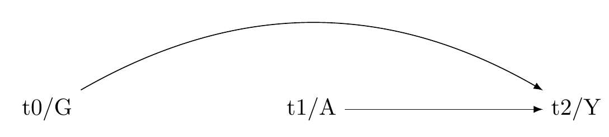
Advice for causal mediation
No unmeasured exposure-outcome confounders given \(L\)
This assumption is denoted by \(Y(a,m) \coprod A | L\). It implies that when we control for the covariates \(L\), there are no unmeasured confounders that influence both the exposure \(A\) and the outcome \(Y\). For example, if we are studying the effect of a drug (exposure) on recovery time from a disease (outcome), and age and gender are our covariates \(L\), this assumption would mean that there are no other factors, not accounted for in \(L\), that influence both the decision to take the drug and the recovery time.
No unmeasured mediator-outcome confounders given \(L\)
This assumption is denoted by \(Y(a,m) \coprod M | L\). It implies that when we control for the covariates \(L\), there are no unmeasured confounders that influence both the mediator \(M\) and the outcome \(Y\). For instance, if we are studying the effect of exercise (exposure) on weight loss (outcome) mediated by calorie intake (mediator), and age and gender are our covariates \(L\), this assumption would mean that there are no other factors, not accounted for in \(L\), that influence both the calorie intake and the weight loss.
No unmeasured exposure-mediator confounders given \(L\)
This assumption is denoted by \(M(a) \coprod A | L\). It implies that when we control for the covariates \(L\), there are no unmeasured confounders that influence both the exposure \(A\) and the mediator \(M\). Using the previous example, this assumption would mean that there are no other factors, not accounted for in \(L\), that influence both the decision to exercise and the calorie intake.
No mediator-outcome confounder affected by the exposure (no red arrow)
This assumption is denoted by \(Y(a,m) \coprod M^{a*} | L\). It implies that there are no variables that confound the relationship between the mediator and the outcome that are affected by the exposure. For example, if we are studying the effect of education (exposure) on income (outcome) mediated by job type (mediator), this assumption would mean that there are no factors that influence both job type and income that are affected by the level of education.
These assumptions are fundamental for the identification of causal mediation effects. If these assumptions are violated, the estimates of the mediation effect can be biased. Importantly, these assumptions cannot be fully tested with observed data. They require substantive knowledge about the underlying causal process. Note that when assumption 4 is violated, natural direct and indirect effects are not identified in the data. [Cite Tyler here]

Advice for modelling repeated exposures in longitudinal data (confounder-treatment feedback)?
Causal mediation is a special case in which we have multiple sequential exposures.
For example, consider temporally fixed multiple exposures. The counterfactual outcomes may be denoted \(Y(a_{t1} ,a_{t2})\). There are four counterfactual outcomes corresponding to the four fixed “treatment regimes”:
Always treat (Y(1,1)): This regime involves providing the treatment at every opportunity.
Never treat (Y(0,0)): This regime involves abstaining from providing the treatment at any opportunity.
Treat once first (Y(1,0)): This regime involves providing the treatment only at the first opportunity and not at subsequent one.
Treat once second (Y(0,1)): This regime involves abstaining from providing the treatment at the first opportunity, but then providing it at the second one.
There are six causal contrasts that we might compute.6
- Always treat vs. Never treat
- Always treat vs. Treat once first
- Always treat vs. Treat once second
- Never treat vs. Treat once first
- Never treat vs. Treat once second
- Treat once first vs. Treat once second
We might also consider treatment to be a function of the previous outcome. For example, we might Treat once first and then treat again or do not treat again depending on the outcome of the previous treatment. This is called “time-varying treatment regimes.”
Note that to estimate the “effect” of a treatment regime, we must compare the counterfactual quantities of interest. The same conditions that apply for causal identification in mediation analysis apply to causal idenification in multiple treatment settings. And notice, just as mediation opens the possibility of time-varying confounding (condition 4, in which the exposure effects the confounders of the mediator/outcome path), so too we find that with time-varying treatments comes the problem of time-varying confounding. Unlike traditional causal mediation analysis, the sequence of treatement regimes that we might consider is indefinitely long.
Temporally organised causal diagrammes help us to discover the problems with traditional multi-level regression analysis and structural equation modelling. Suppose we are interested in the question of whether beliefs in big Gods affect social complexity.
First consider fixed regimes Suppose we have well-defined concept of social complexity and excellent measurements over time. Suppose we want to compare the effects of beliefs on big Gods on Social complexity using historical data measured over two centuries. Our question is whether the introduction and persistence of such beliefs differs from having no such beliefs. The treatment strategies are: “always believe in big Gods” versus “never believe in big Gods” on the level of social complexity. The a causal diagram illustrates two time points in our study the study.
Here, \(A_{tx}\) represents the cultural belief in “big Gods” at time \(x\), and \(Y_{tx}\) is the outcome, social complexity, at time \(x\). Economic trade, denoted as \(L_{tx}\), is a time-varying confounder because it varies over time and confounds the effect of \(A\) on \(Y\) at several time points \(x\). To complete our causal diagramme we include an unmeasured confounder \(U\), such as geographical constraints, which might influence both the belief in “big Gods” and social complexity.
We know that the level of economic trade at time \(0\), \(L_{t0}\), influences the belief in “big Gods” at time \(1\), \(A_{t1}\). We therefore draw an arrow from \(L_{t0}\) to \(A_{t1}\). But we also know that the belief in “big Gods”, \(A_{t1}\), affects the future level of economic trade, \(L_{t(2)}\). This means that we need to add an arrow from \(A_{t1}\) to \(L_{t(2)}\). This causal graph represents a feedback process between the time-varying exposure \(A\) and the time-varying confounder \(L\). This is the simplest graph with exposure-confounder feedback. In real world setting there could be arrows. However, our DAG however need show the minimum number of arrows to exhibit the problem of exposure-confounder feedback.
What happens if we condition on the time-varying confounder \(L_{t3}\)? Two things occur. First, we block all the backdoor paths between the exposure \(A_{t2}\) and the outcome. We need to block those paths to eliminate confounding. Therefore, conditioning on the time-varying confounding is essential. However, paths that were previously blocked are now open. For example, the path \(A_{t1}, L_{t2}, U, Y_{t(4)}\), which was previous closed is opened because the time varying confounder is the common effect of \(A_{t1}\) and \(U\). Conditioning opens the path \(A_{t1}, L_{t2}, U, Y_{3}\). Therefore we must avoid conditioning on the time varying confounder. Damned either way.
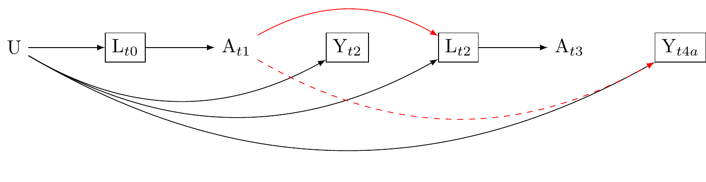
The same problem occurs if the time-varying exposure and time-varying confounder share a common cause (without the exposure affecting the confounder).
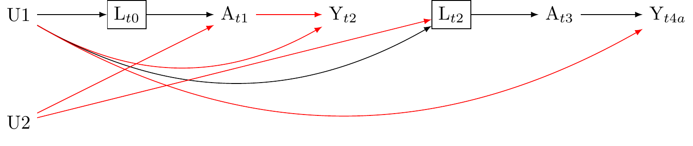
And the problem is only more entrenched when the exposures \(A_{t1}\) affects the outcome \(Y_{t4}\). Because \(L_{t2}\) is along the path from \(A_{t1}\) to \(Y_{t4}\) conditioning on \(L_{t2}\) partially blocks the path between the exposure and the outcome. Conditioning on \(L_{t2}\) in this setting induces both collider stratification bias and mediator bias. Yet we must conditoin on \(L_{t2}\) to block the open backdoor path between \(L_{t2}\) and \(Y_{t4}\). The general problem of xposure-confounder feedback is described in detail in (Hernan and Robins 2023). This problem presents a serious issue for cultural evolutionary studies. The bad news is that nearly traditional regresion based methods cannot address this problem. The good new is that
More about SWIGS…
Part 3. Applications
On the benefits of three wave designs
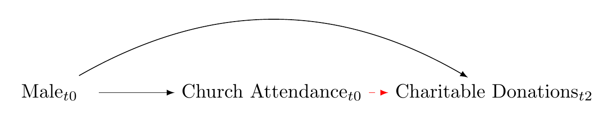
Solution: Adjust for Confounder
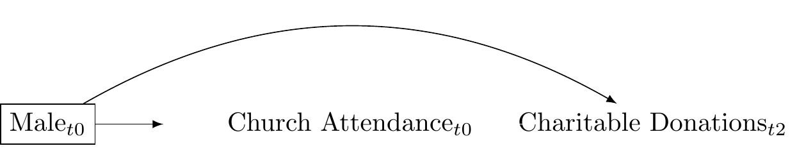
Bias: exposure at time 0 is a common cause of the exposure at time 1 and the outcome at time 2
Advice: adjust for confounder at baseline
Confounding control by three-wave panel designs
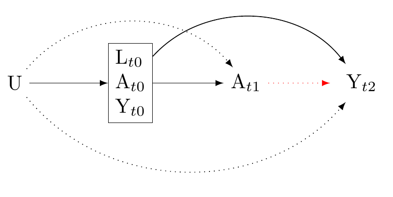
Part 4. Selection bias in the three wave panel design.
Generalisability
Transportability
Selection on Sample
(Imagine a randomised trial … )
Unmeasured confounder affects selection and the outcome
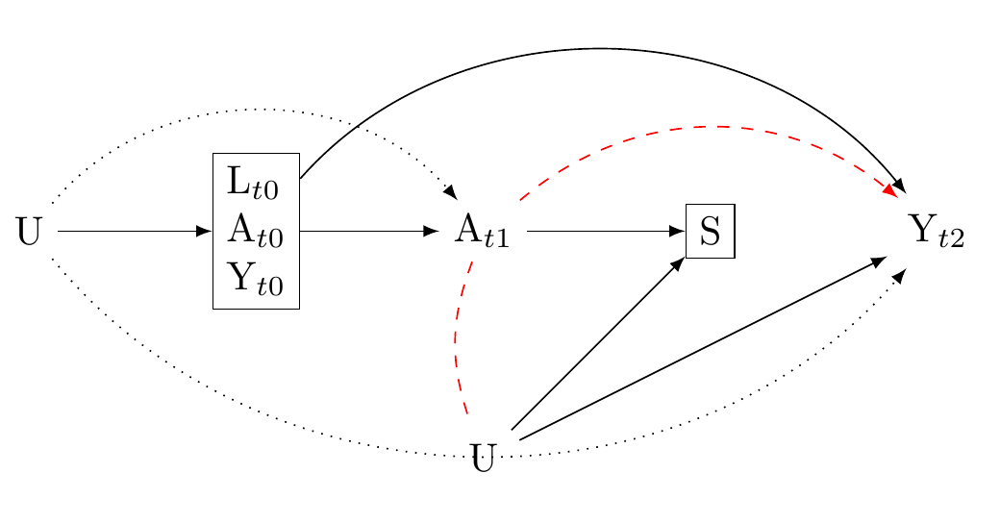
Unmeasured confounder affects a measured confounder of selection and the outcome, and there are unmeasured confounders that affect the measured confounder
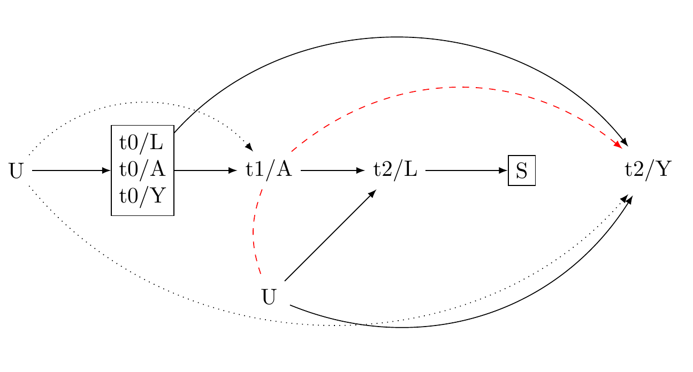
Unmeasured confounder affects selection into the study and also attrition
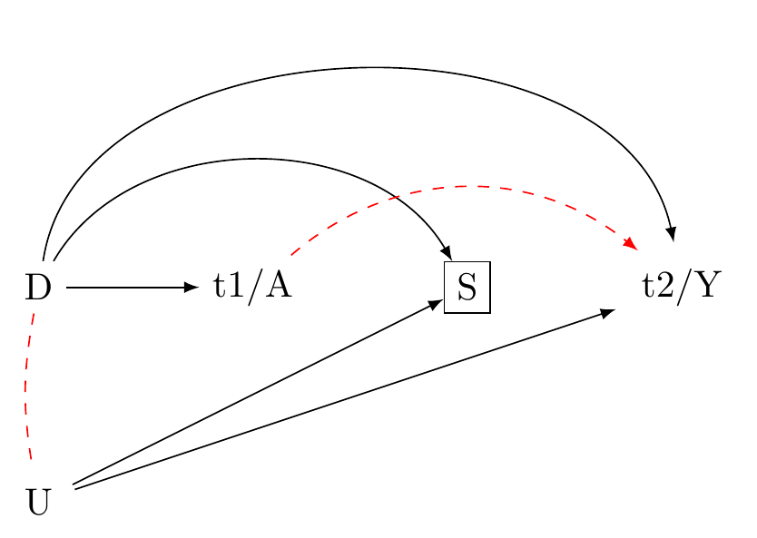
Outcome and exposure affect attrition
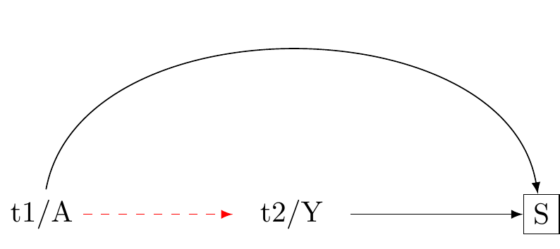
Outcome and exposure affect attrition: we may approach this problem as one of directed measurement error.
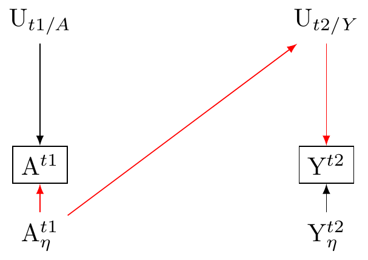
Part 5. Measurement and confounding in the three wave panel design.
Undirected uncorrellated measurement error under the null
Non-Differential Measurement Error: This type of error is unrelated to the levels of the exposure or outcome. Simply put, the inaccuracies in measuring the exposure or outcome don’t depend on the actual levels of these variables. It’s “non-differential” because the errors do not “differ” based on the level of exposure or outcome. This means that they are just as likely to overestimate as they are to underestimate the true values.
Uncorrelated Measurement Error: Uncorrelated (or non-dependent) measurement error refers to a situation where the measurement errors of the exposure and the outcome are not related to each other. That is, a mistake in measuring the exposure doesn’t predict a mistake in measuring the outcome, and vice versa.
When these two types of error are present at the same time, the effect of the exposure on the outcome can be underestimated, which is known as “attenuation bias”. This happens because the ‘noise’ (the measurement errors) dilutes the ‘signal’ (the true relationship between exposure and outcome).
However, if the null hypothesis is true (i.e., there’s no real relationship between the exposure and outcome), this won’t introduce bias. This is because, with non-differential and uncorrelated errors, mistakes are equally likely to be in any direction. Since the true effect is zero under the null, the average estimated effect from many repeated studies would also be zero, despite the presence of these measurement errors.
Still, while there won’t be bias under the null, measurement error can increase the variability of your estimates (making them less precise) and reduce the statistical power of your study (making it harder to detect a true effect if one exists). We next turn to this case.
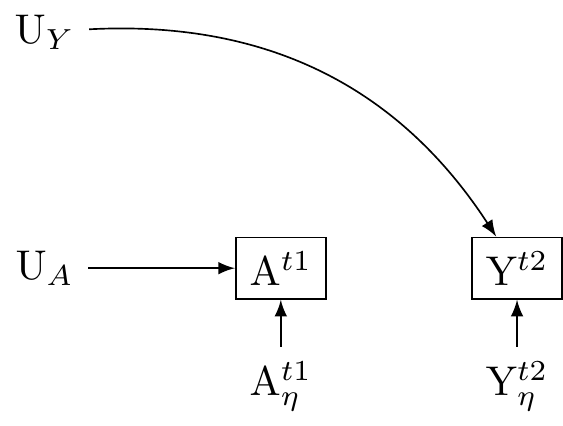
Uncorrellated undirected measurement error when there is an effect
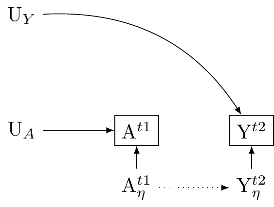
If there is a true effect of the exposure on the outcome, non-differential measurement error in both the exposure and the outcome can lead to an attenuation of the effect estimate. This phenomenon is often referred to as “regression dilution bias” or “attenuation bias”.
Take a moment to understand these concepts. Non-differential measurement error refers to the situation where the measurement error does not differ based on the level of exposure or the outcome. It’s called “non-differential” because the degree of error doesn’t “differ” based on these factors.
When it comes to independent non-differential measurement error, it means that the errors in the measurements of exposure and outcome are uncorrelated with each other, and they don’t depend on the true values of exposure and outcome.
Now, if there’s a true effect of the exposure on the outcome, the presence of measurement error in both variables can lead to attenuation bias, because the effect size is underestimated due to the ‘noise’ introduced by these errors.
When you measure the exposure or outcome with error, the variability of these variables increases, thus the signal (i.e., the true relationship) gets ‘diluted’ in the increased ‘noise’. This can lead to an underestimation of the true effect size.
The more severe the measurement error, the greater the attenuation of the estimated effect. In other words, the observed relationship between the exposure and the outcome will be weaker than the true relationship, potentially leading to a failure to detect a true association.
However, it’s important to mention that the degree of this attenuation can depend on various factors, including the extent of the measurement error, the strength of the true relationship, and the statistical method used. Some statistical methods have been developed to correct for this type of bias, such as regression calibration, simulation extrapolation (SIMEX), and multiple imputation (citations)
Independent undirected measurement error including measurement error of confounders
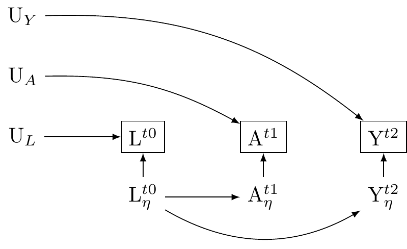
Dependent undirected measurement error including measurement error of confounders: Reconsider The Three-Wave Panel Design.
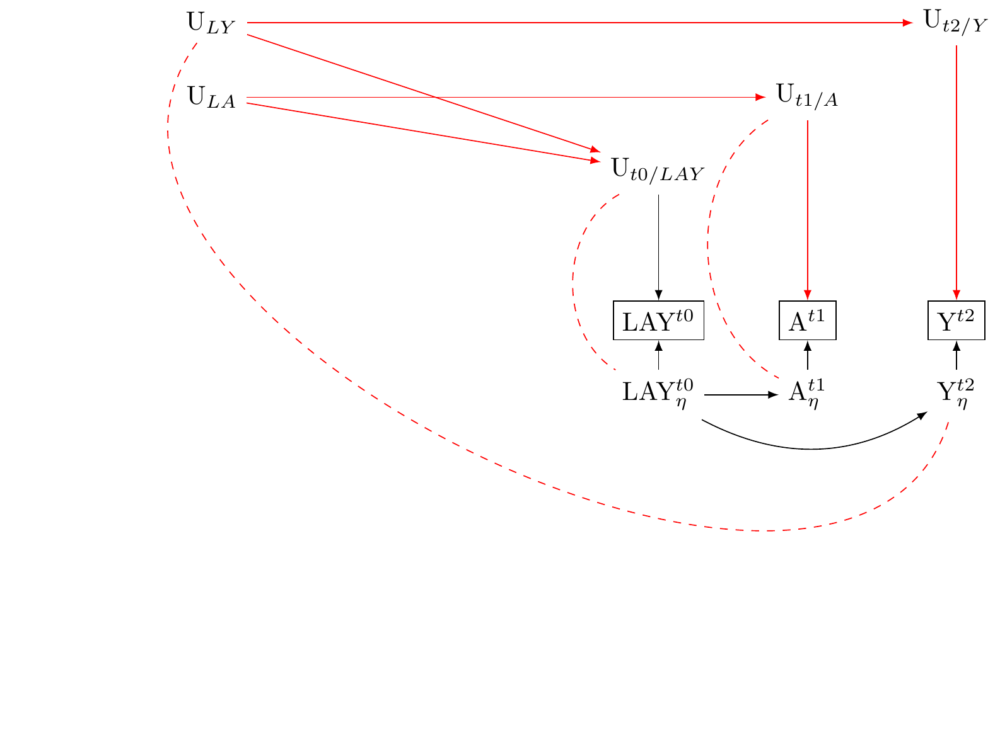
Dependent Directed Measurement Error in Three-Wave Panels
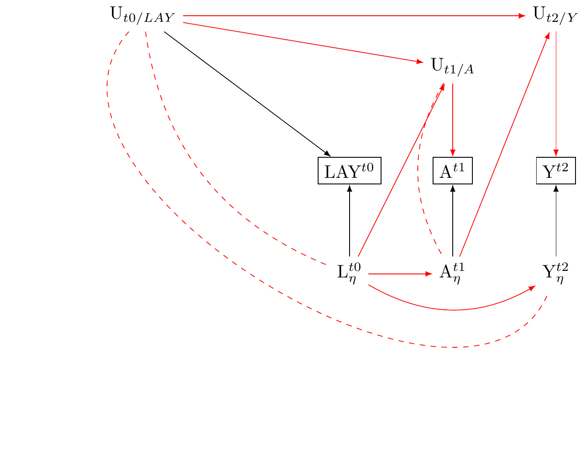
How theory of dependent and directed measurement error might be usefully employed to develop a pragmatic responses to construct measurement
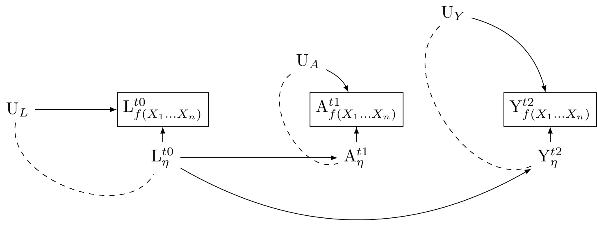
Consider a study that seeks to use this dataset to investigate the effect of regular exercise on psychological distress. In contrast to previous graphs, let us allow for latent reality to affect our measurements, as well as the discrepencies between our measurements and true underlying reality. We shall use Figure 26 as our initial guide.
We represent the true exercise by \(\eta_A\). We represent true psychological distress by \(\eta_Y\). Let \(\eta_L\) denote a persons true workload, and assume that this state of work affects both levels of excercise and psychological distress.
To bring the model into contact with measurement theory, Let us describe measurements of these latent true underlying realities as functions of multiple indicators: \(L_{f(X_1\dots X_n)}\), \(A_{f(X_1\dots X_n)}\), and \(Y_{f(X_1\dots X_n)}\). These constructs are measured realisations of the underlying true states. We assume that the true states of these variables affect their corresponding measured states, and so draw arrows from \(\eta_L\rightarrow{L_{f(X_1\dots X_n)}}\), \(\eta_A\rightarrow{A_{f(X_1\dots X_n)}}\), \(\eta_Y\rightarrow{Y_{f(X_1\dots X_n)}}\).
We also assume unmeasured sources of error that affect the measurements: \(U_{L} \rightarrow\) \(L_{f(X_1\dots X_n)}\), \(U_{A} \rightarrow\) \(A_{f(X_1\dots X_n)}\), and \(U_{Y} \rightarrow\) \(Y_{f(X_1\dots X_n)}\). That is, we allow that our measured indicators may “see as through a mirror, in darkness,” the underlying true reality they hope to capture (Corinthians 13:12). We use \(U_{L}\), \(U_{A}\) and \(U_{Y}\) to denote the unmeasured sources of error in the measured indicators. These are the unknown, and perhaps unknowable, darkness and mirror.
Allow that the true underlying reality represented by the \(\eta_{var}\) may be multivariate. Similarly, allow the true underlying reality represented by \(U_{var}\) is multivariate.
We now have a causal diagramme that more precisely captures VanderWeele’s thinking as presented in Figure 45. In our Figure 26, we have fleshed out \(\mathcal{R}\) in a way that may include natural language concepts and scientific language, or constructs, as latent realities and latent unmeasured sources of error in our constructs.
The utility of describing the measurement dynamics using causal graphs is apparrent. We can understand that the measured states, once conditioned upon create collider biases which opens path between the unmeasured sources of error and the true underlying state that gives rise to our measurements. This is depicted by a the arrows \(U_{var}\) and from \(\eta_{var}\) into each \(var_{f(X1, X2,\dots X_n)}\)
Notice: where true unmeasured (multivariate) psycho-physical states are related to true unmeasured (multivariate) sources of error in the measurement of those states, the very act of measurement opens pathways to confounding.
If for each measured construct \(var_{f(X1, X2,\dots X_n)}\), the sources of error \(U_{var}\) and the unmeasured consituents of reality that give rise to our measures \(\eta_{var}\) are uncorrelated with other variables \(U\prime_{var}\) and from \(\eta\prime_{var}\) and \(var\prime_{f(X1, X2,\dots X_n)}\), our estimates may be downwardly biased toward the null. However, d-separation is preserved. Where errors are uncorrelated with true latent realities, there is no new pathway that opens information between our exposure and outcome. Consider the relations presented in Figure 33
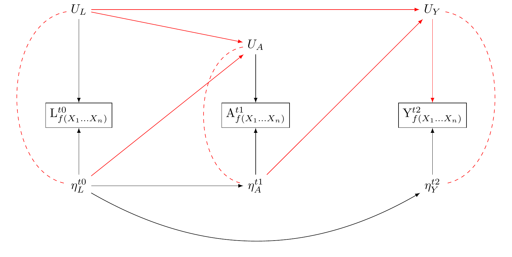
Here,
\(\eta_L \rightarrow L\): We assume that the true workload state affects its measurement. This measurement, however, may be affected by an unmeasured error source, \(U_{L}\). Personal perceptions of workload can introduce this error. For instance, a person may perceive their workload differently based on recent personal experiences or cultural backgrounds. Additionally, unmeasured cultural influences like societal expectations of productivity could shape their responses independently of the true workload state. There may be cultural differences - Americans may verstate; the British may present effortless superiority.
\(\eta_A \rightarrow A\): When it comes to exercise, the true state may affect the measured frequency (questions about exercise are not totally uninformative). However, this measurement is also affected by an unmeasured source of error, which we denote by \(U_{A}\). For example, a cultural shift towards valuing physical health might prompt participants toreport higher activity levels, introducing an error, \(U_{A}\).
\(\eta_Y \rightarrow Y\): We assume questions about distress are not totally uninformative: actual distress affects the measured distress. However this measurement is subject to unmeasured error: \(U_{Y}\). For instance, an increased societal acceptance of mental health might change how distress is reported creating an error, \(U_{Y}\), in the measurement of distress. Such norms, moreover, may change over time.
\(U_{L} \rightarrow L\), \(U_{A} \rightarrow A\), and \(U_{Y} \rightarrow Y\): These edges between the nodes indicate how each unmeasured error source can influence its corresponding measurement, leading to a discrepancy between the true state and the measured state.
\(U_{L} \rightarrow U_{A}\) and \(U_{L} \rightarrow U_{Y}\): These relationships indicate that the error in the stress measurement can correlate with those in the exercise and mood measurements. This could stem from a common cultural bias affecting how a participant self-reports across these areas.
\(\eta_A \rightarrow U_{Y}\) and \(\eta_L \rightarrow U_{A}\): These relationships indicate that the actual state of one variable can affect the error in another variable’s measurement. For example, a cultural emphasis on physical health leading to increased exercise might, in turn, affect the reporting of distress levels, causing an error, \(U_{Y}\), in the distress measurement. Similarly, if a cultural trend pushes people to work more, it might cause them to over or underestimate their exercise frequency, introducing an error, \(U_{A}\), in the exercise measurement.
Confounding control by baseline measures of exposure and outcome: Dependent Directed Measurement Error in Three-Wave Panels
We propose a three-wave panel design to control confounding. This design adjusts for baseline measurements of both exposure and the outcome.
Understanding this approach in the context of potential directed and correlated measurement errors gives us a clearer picture of its strengths and limitations.
This three-wave panel design incorporates baseline measurements of both exposure and confounders. As a result, any bias that could come from unmeasured sources of measurement errors should be uncorrelated with their baseline effects.
For instance, if individuals have a social desirability bias at the baseline, they would have to develop a different bias unrelated to the initial one for new bias to occur due to correlated unmeasured sources of measurement errors.
However, we cannot completely eliminate the possibility of such new bias development. There could also be potential new sources of bias from directed effects of the exposure on the error term of the outcome, which can often occur due to panel attrition.
To mitigate this risk, we adjust for panel attrition/non-response using methods like multiple imputation. We also consistently perform sensitivity analyses to detect any unanticipated bias.
Despite these potential challenges, it is worth noting that by including measures of both exposure and outcome at baseline, the chances of new confounding are significantly reduced.
Therefore, adopting this practice should be a standard procedure in multi-wave studies as it substantially minimizes the likelihood of introducing novel confounding factors.
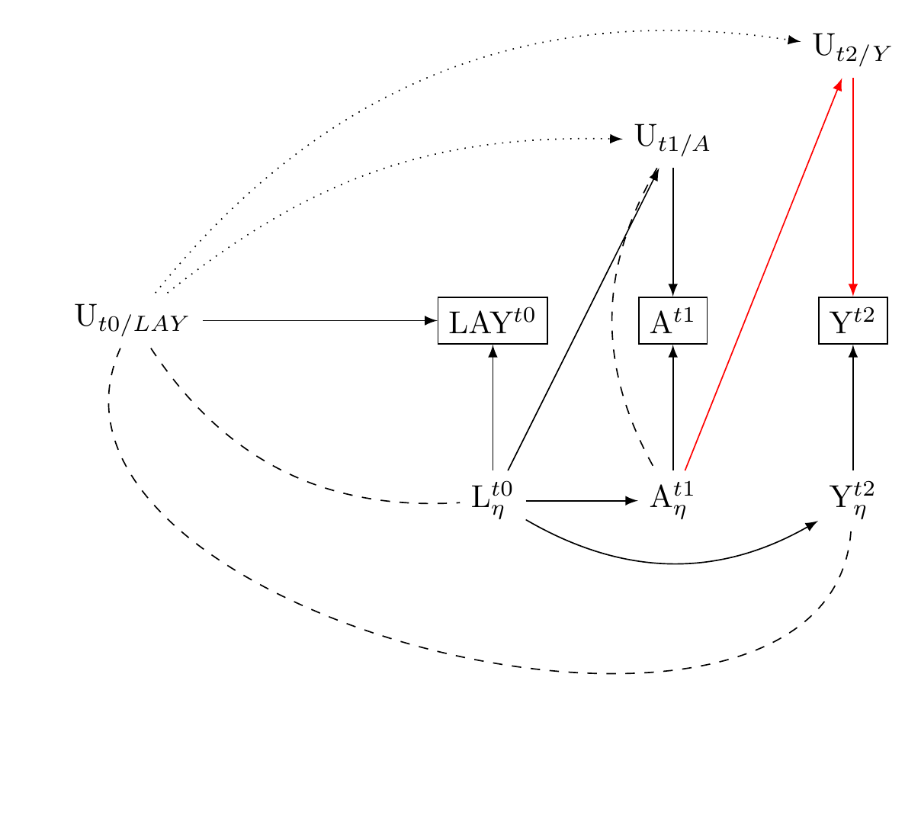
Stray points to address
- Structural equation models are not causal diagrammes
- Causal diagrammes are non-parametric
- Causal diagrammes represent interactions \(A -- > Y <--- B\) (two arrows into the outcome)
- We may distinguish between effect modification and interaction.
ELSE (for conclusion)
- Where possible do experiments, but we cannot always perform experiments
- No multi-level models
- Good measures
- Retention
- Check positivity – how many change.
- (causation not all of science)
- (need for assumpitions)
- Causal estimation is not all of science. And it is not all of causality.
- Curse of dimensionality
- Tracking change
Appendix 1: Review of the theory of multiple versions of treatment
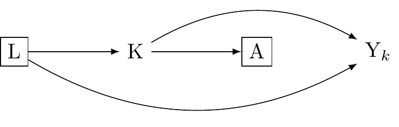
Perhaps not all is lost. VanderWeele looks to the theory of multiple versions of treatment for solace.
Recall, a causal effect is defined as the difference in the expected potential outcome when everyone is exposed (perhaps contrary to fact) to one level of a treatment, conditional on their levels of a confounder, with the expected potential outcome when everyone is exposed to a a different level of a treatement (perhaps contrary to fact), conditional on their levels of a counfounder.
\[ \delta = \sum_l \left( \mathbb{E}[Y|A=a,l] - \mathbb{E}[Y|A=a^*,l] \right) P(l)\]
where \(\delta\) is the causal estimand on the difference scale \((\mathbb{E}[Y^0 - Y^0])\).
In causal inference, the multiple versions of treatment theory allows us to handle situations where the treatment isn not uniform, but instead has several variations. Each variation or “version” of the treatment can have a different effect on the outcome. However, consistency is not violated because it is redefined: for each version of the treatment, the outcome under that version is equal to the observed outcome when that version is received. Put differently we may think of the indicator \(A\) as corresponding to many version of the true treament \(K\). Where conditional independence holds such that there is a absence of confounding for the effect of \(K\) on \(Y\) given \(L\), we have: \(Y(k)\coprod A|K,L\). This states conditional on \(L\), \(A\) gives no information about \(Y\) once \(K\) and \(L\) are accounted for. When \(Y = Y(k)\) if \(K = k\) and Y\((k)\) is independent of \(K\), condition on \(L\), then \(A\) may be thought of as a coarsened indicator of \(K\), as shown in (fig_dag_multiple_version_treatment_dag?). We may estimate consistent causal effects where:
\[ \delta = \sum_{k,l} \mathbb{E}[Y(k)|l] P(k|a,l) P(l) - \sum_{k,l} \mathbb{E}[Y(k)|l] P(k|a^*,l) P(l)\]
The scenario represents a hypothetical randomised trial where within strata of covariates \(L\), individuals in one group receive a treatment \(K\) version randomly assigned from the distribution of \(K\) distribution \((A = 1, L = l)\) sub-population. Meanwhile, individuals in the other group receive a randomly assigned \(K\) version from \((A = 0, L = l)\)
This theory finds its utility in practical scenarios where treatments seldom resemble each other – we discussed the example of obesity last week (see: (Tyler J. VanderWeele and Hernan 2013)).
Reflective and formative measurement models may be approached as multiple versions of treatment
Vanderweele applies the following substitution:
\[\delta = \sum_{\eta,l} \mathbb{E}[Y_\eta|l] P(\eta|A=a+1,l) P(l) - \sum_{\eta,l} \mathbb{E}[Y_\eta|l] P(\eta|A=a,l) P(l)\]
Specifically, we substitue \(K\) with \(\eta\) from the previous section, and compare the measurement response \(A = a + 1\) with \(A = a\). We discover that if the influence of \(\eta\) on \(Y\) is not confounded given \(L\), then the multiple versions of reality consistent with the reflective and formative statistical models of reality will not lead to biased estimation. \(\delta\) retains its interpretability as a comparison in a hypothetical randomised trial in which the distribution of coarsened measures of \(\eta_A\) are balanced within levels of the treatment, conditional on \(\eta_L\).
This connection between measurement and the multiple versions of treatment framework provides a hope for consistent causal inference varying reliabilities of measurement.
However, as with the theory of multiple treatments, we might not known how to interpret our results because we don’t know the true relationships between our measured indicators and underlying reality.
How can we do better?
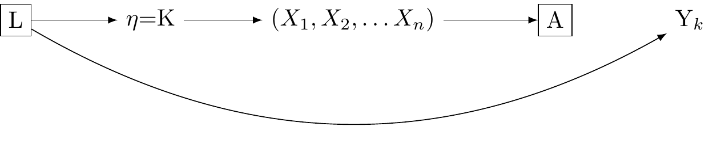
Appendix 2. Measurement and psychometric research.
In psychometric research, formative and reflective models describe the relationship between latent variables and their respective indicators.
Reflective Model (Factor Analysis)
In a reflective measurement model, also known as an effect indicator model, the latent variable is understood to cause the observed variables. In this model, changes in the latent variable cause changes in the observed variables. Each indicator (observed variable) is a ‘reflection’ of the latent variable. In other words, they are effects or manifestations of the latent variable. These relations are presented in Figure 38.
The reflective model may be expressed:
\[X_i = \lambda_i \eta + \varepsilon_i\]
Here, \(X_i\) is an observed variable (indicator), \(\lambda_i\) is the factor loading for \(X_i\), \(\eta\) is the latent variable, and \(\varepsilon_i\) is the error term associated with \(X_i\). It is assumed that all the indicators are interchangeable and have a common cause, which is the latent variable \(\eta\).
In the conventional approach of factor analysis, the assumption is that a common latent variable is responsible for the correlation seen among the indicators. Thus, any fluctuation in the latent variable should immediately lead to similar changes in the indicators.These assumptions are presented in Figure 38.
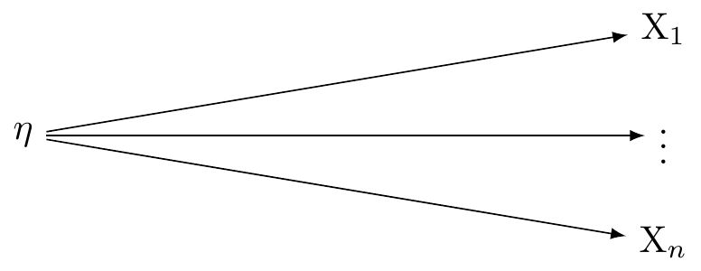
The Formative Model (Factor Analysis)
In a formative measurement model, the observed variables are seen as causing or determining the latent variable. Here again, there is a single latent variable. However this latent variable is taken to be an effect of the underlying indicators. These relations are presented in Figure 39.
The formative model may be expressed:
\[\eta = \sum_i\lambda_i X_i + \varepsilon\]
In this equation, \(\eta\) is the latent variable, \(\lambda_i\) is the weight for \(X_i\) (the observed variable), and \(\varepsilon\) is the error term. The latent variable \(\eta\) is a composite of the observed variables \(X_i\).
In the context of a formative model, correlation or interchangeability between indicators is not required. Each indicator contributes distinctively to the latent variable. As such, a modification in one indicator doesn’t automatically imply a corresponding change in the other indicators.
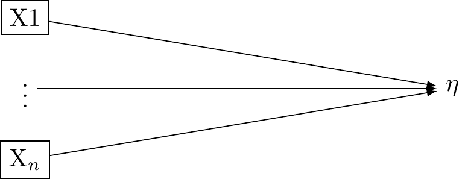
Structural Interpretation of the formative model and reflective models (Factor Analysis)
VanderWeele has recently raised a host of problems arising for formative and reflective models that become clear when we examine their causal assuptions (Tyler J. VanderWeele 2022).
However, this analysis of reflective and formative models assumed that the latent η was causally efficacious. This may not be the case (VanderWeele 2022)
VanderWeele distinguishes between statistical and structural interpretations of the equations preesented above.
Statistical Model: a mathematical construct that shows how observable variables, also known as indicators, are related to latent or unseen variables. These are presented in the equations above
Structural Model: A structural model refers to the causal assumptions or hypotheses about the relationships among variables in a statistical model. The assumptions of the factor analytic tradition are presented in Figure 39 and Figure 38 are structural models.
We have seen that the reflective model statistically implies that the observed variables (indicators) are reflections or manifestations of the latent variable, expressed as \(X_i = \lambda_i \eta + \varepsilon_i\). However, the factor analytic tradition makes the additional structural assumption that a univariate latent variable is causally efficacious and influences the observed variables, as in: Figure 40.
We have also seen that the formative model statistically implies that the latent variable is formed or influenced by the observed variables, expressed as \(\eta = \sum_i\lambda_i X_i + \varepsilon\). However, the factor analytic tradition makes the additional assumption that the observed variables give rise to a univariate latent variable, as in Figure 41.

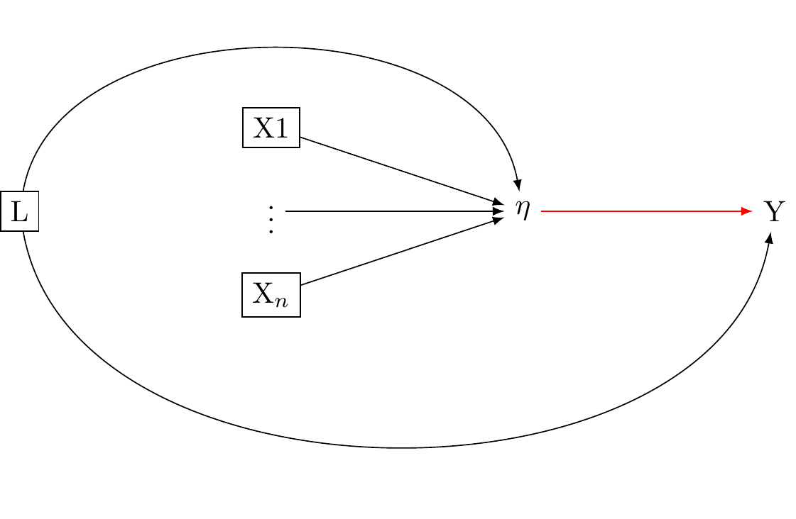
The reflective model implies \(X_i = \lambda_i \eta + \varepsilon_i\), which factor analysts take to imply Figure 40.
The formative model implies \(\eta = \sum_i\lambda_i X_i + \varepsilon\), which factor analysts take to imply Figure 41.
Problems with the structural interpretations of the reflective and formative factor models.
While the statistical model \(X_i = \lambda_i \eta + \varepsilon_i\) aligns with Figure 40, it also alings with Figure 42. Cross-sectional data, unfortunately, do not provide enough information to discern between these different structural interpretations.
Similarly, the statistical model \(\eta = \sum_i\lambda_i X_i + \varepsilon\) agrees with Figure 41 but it also agrees with Figure 43. Here too, cross-sectional data cannot decide between these two potential structural interpretations.
There are other, compatible structural interprestations as well. The formative and reflective conceptions of factor analysis are compatible with indicators having causal effects as shown in (fig_dag_multivariate_reality_again?). They are also compatible with a multivariate reality giving rise to multiple indicators as shown in Figure 44.
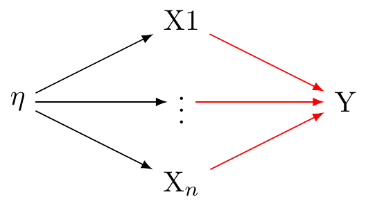
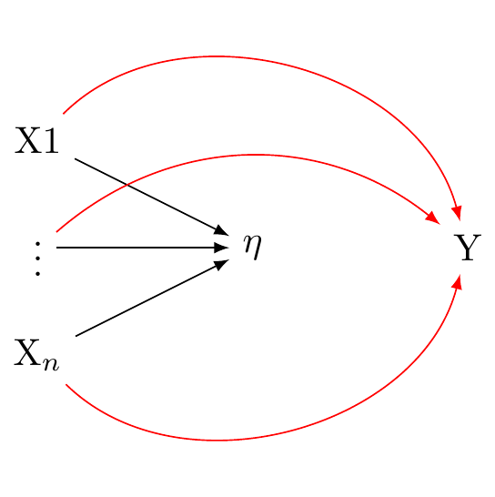
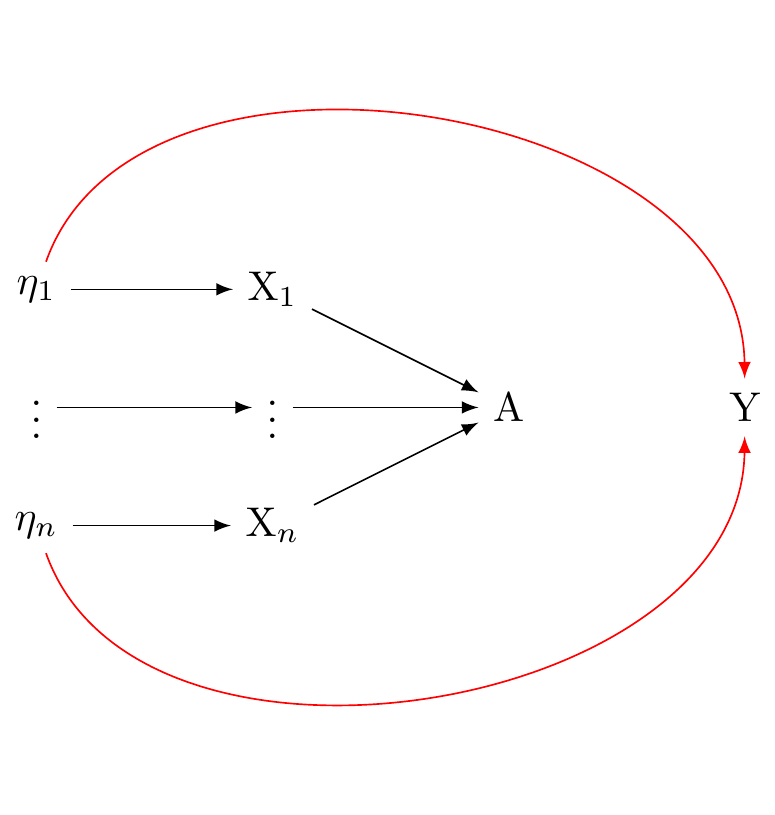
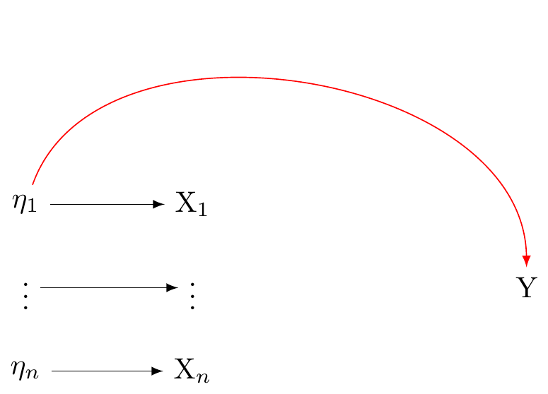
VanderWeele’s key observation is this:
While cross-sectional data can provide insights into the relationships between variables, they cannot conclusively determine the causal direction of these relationships.
This results is worrying. The structural assumptions of factor analysis underpin nearly all psychological research. If the cross-sectional data used to derive factor structures cannot decide whether the structural interpretations of factor models are accurate, where does that leave us?
More worrying still, VanderWeele discusses several longitudinal tests for structural interpretations of univariate latent variables that do not pass.
Where does that leave us? In psychology we have heard about a replication crisis. We might describe the reliance on factor models as an aspect of a much larger, and more worrying “causal crisis”
VanderWeele’s model of reality
VanderWeele’s article concludes as follows:
A preliminary outline of a more adequate approach to the construction and use of psychosocial measures might thus be summarized by the following propositions, that I have argued for in this article: (1) Traditional univariate reflective and formative models do not adequately capture the relations between the underlying causally relevant phenomena and our indicators and measures. (2) The causally relevant constituents of reality related to our constructs are almost always multidimensional, giving rise both to our indicators from which we construct measures, and also to our language and concepts, from which we can more precisely define constructs. (3) In measure construction, we ought to always specify a definition of the underlying construct, from which items are derived, and by which analytic relations of the items to the definition are made clear. (4) The presumption of a structural univariate reflective model impairs measure construction, evaluation, and use. (5) If a structural interpretation of a univariate reflective factor model is being proposed this should be formally tested, not presumed; factor analysis is not sufficient for assessing the relevant evidence. (6) Even when the causally relevant constituents of reality are multidimensional, and a univariate measure is used, we can still interpret associations with outcomes using theory for multiple versions of treatment, though the interpretation is obscured when we do not have a clear sense of what the causally relevant constituents are. (7) When data permit, examining associations item-by-item, or with conceptually related item sets, may give insight into the various facets of the construct.
A new integrated theory of measurement for psychosocial constructs is needed in light of these points – one that better respects the relations between our constructs, items, indicators, measures, and the underlying causally relevant phenomena. (VanderWeele 2022)
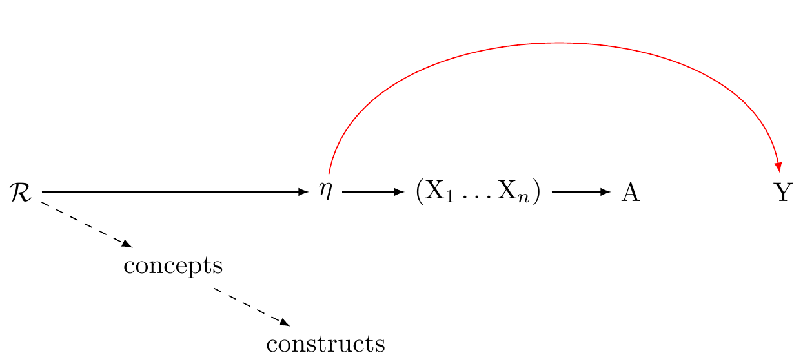
This seems to me sensible. However, Figure 45 this is not a causal graph. The arrows to not clearly represent causal relations. It leaves me unclear about what to practically do. My thoughts on measurement presented in the main article offer my best attempt to think of psychometric theory in light of causal inference.
References
Barrett, Malcolm. 2021. Ggdag: Analyze and Create Elegant Directed Acyclic Graphs. https://CRAN.R-project.org/package=ggdag.
Bulbulia, Joseph A. 2022. “A Workflow for Causal Inference in Cross-Cultural Psychology.” Religion, Brain & Behavior 0 (0): 1–16. https://doi.org/10.1080/2153599X.2022.2070245.
Cinelli, Carlos, Andrew Forney, and Judea Pearl. 2022. “A Crash Course in Good and Bad Controls.” Sociological Methods & Research, May, 00491241221099552. https://doi.org/10.1177/00491241221099552.
Edwards, Jessie K, Stephen R Cole, and Daniel Westreich. 2015. “All Your Data Are Always Missing: Incorporating Bias Due to Measurement Error into the Potential Outcomes Framework.” International Journal of Epidemiology 44 (4): 14521459.
Hernan, M. A., and J. M. Robins. 2023. Causal Inference. Chapman & Hall/CRC Monographs on Statistics & Applied Probab. Taylor & Francis. https://books.google.co.nz/books?id=\_KnHIAAACAAJ.
Holland, Paul W. 1986. “Statistics and Causal Inference.” Journal of the American Statistical Association 81 (396): 945960.
McElreath, Richard. 2020. Statistical Rethinking: A Bayesian Course with Examples in r and Stan. CRC press.
Morgan, Stephen L., and Christopher Winship. 2014. Counterfactuals and Causal Inference: Methods and Principles for Social Research. 2nd ed. Analytical Methods for Social Research. Cambridge: Cambridge University Press. https://doi.org/10.1017/CBO9781107587991.
Rohrer, Julia M. 2018. “Thinking Clearly about Correlations and Causation: Graphical Causal Models for Observational Data.” Advances in Methods and Practices in Psychological Science 1 (1): 2742.
Rubin, D. B. 1976. “Inference and Missing Data.” Biometrika 63 (3): 581–92. https://doi.org/10.1093/biomet/63.3.581.
VanderWeele, Tyler. 2015. Explanation in Causal Inference: Methods for Mediation and Interaction. Oxford University Press.
VanderWeele, Tyler J. 2009. “Concerning the Consistency Assumption in Causal Inference.” Epidemiology 20 (6): 880. https://doi.org/10.1097/EDE.0b013e3181bd5638.
———. 2018. “On Well-Defined Hypothetical Interventions in the Potential Outcomes Framework.” Epidemiology 29 (4): e24. https://doi.org/10.1097/EDE.0000000000000823.
———. 2022. “Constructed Measures and Causal Inference: Towards a New Model of Measurement for Psychosocial Constructs.” Epidemiology 33 (1): 141. https://doi.org/10.1097/EDE.0000000000001434.
VanderWeele, Tyler J, and Miguel A Hernan. 2013. “Causal Inference Under Multiple Versions of Treatment.” Journal of Causal Inference 1 (1): 120.
Westreich, Daniel, Jessie K Edwards, Stephen R Cole, Robert W Platt, Sunni L Mumford, and Enrique F Schisterman. 2015. “Imputation Approaches for Potential Outcomes in Causal Inference.” International Journal of Epidemiology 44 (5): 17311737.
Footnotes
The term “DAG” is unfortunate because not all directed acyclic graphs are causal. For a graph to be causal it must satisfy the conditions of markov factorisation (see Appendix A).↩︎
In my view, currently the best resource is Miguel Hernan’s free course, here: https://pll.harvard.edu/course/causal-diagrams-draw-your-assumptions-your-conclusions.↩︎
The counter-factual outcome under the exposure \(A = a\) may be written in different ways, such as \(Y(a)\) (the notation we use here), \(Y^a\), and \(Y_a\).↩︎
Note that mathematically, the difference in the average expectation is equivalent to the average of the differences in expectation.↩︎
Notice that the specification of our causal question is vague. Miguel Hernán argues that to ask a causal question requires specifying an hypothetical randomised experiment, which, although perhaps implausible, clarifies the precise causal contrast in which we are interested. On how to state a causal question in reference to a target trial see:(Bulbulia 2022). We are setting this problem aside to focus on problems of evaluating the three fundamental identification assumptions. However there are certainly problems elsewhere.↩︎
We compute the number of possible combinations of contrasts by \(C(n, r) = \frac{n!}{(n-r)! \cdot r!}\)↩︎
Comment on slow changes
Over long periods of time we can expect additional sources of confounding. Changes in cultural norms and attitudes can occur over the duration of a longitudinal study, leading to residual confounding. For example, if there is a cultural shift towards increased acceptance of mental health issues, this might change how psychological distress is reported over time, irrespective of baseline responses.